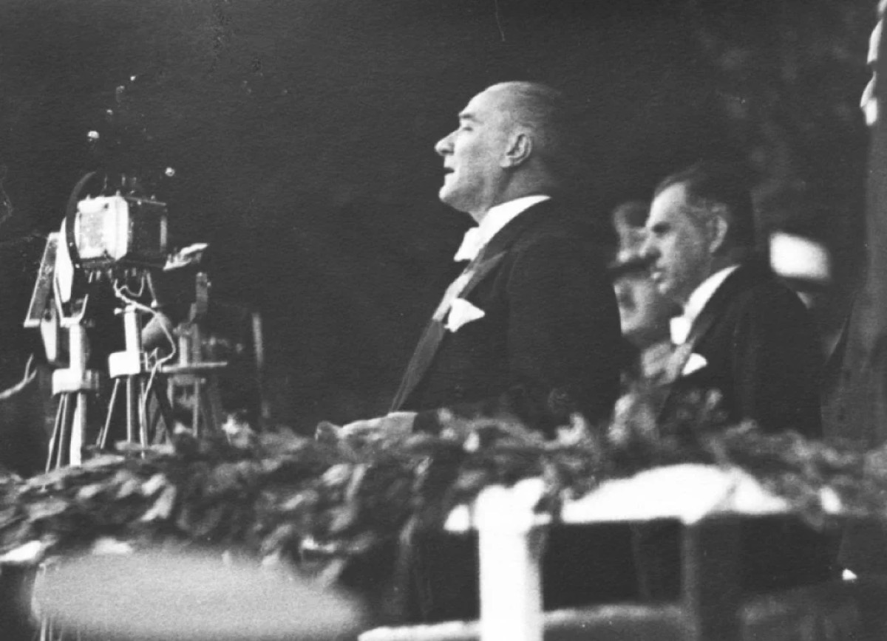

Cumhuriyet Devrimi ve Atatürk’ün Ulusal Sentezi
Her ideoloji, her devrimci program, her düşünce sistemi, her doktrin, her paradigma, her siyasal sistem kendi tarihsel, toplumsal, siyasal, sınıfsal, kültürel, iktisadî, coğrafî şartlarında olgunlaşır. Onların sentezi,…

Her ideoloji, her devrimci program, her düşünce sistemi, her doktrin, her paradigma, her siyasal sistem kendi tarihsel, toplumsal, siyasal, sınıfsal, kültürel, iktisadî, coğrafî şartlarında olgunlaşır. Onların sentezi, ürünü, birikimi olarak tarih sahnesine çıkar. Hiçbir düşünce, tarihe çalım atamaz; tarihin üzerinden sırıkla atlayamaz, tarihin altından tünel kazıp geçemez. Bu yalın gerçek, dünyanın her tarafında geçerlidir. Çünkü tarihsel bir tunç yasasıdır.
Örneğin ölçek olarak hayli büyük olan, küresel düzlemde de konumları hacimli olan Çin’in sosyalizmiyle SSCB’nin sosyalizmi farklıydı. Sonra SSCB dağıldı, 1991 yılında. Çin; kendi uygulamasına, kendi pratiğine “Çin’e özgü sosyalizm” diyerek yoluna devam etti ve bugünkü konumuna ulaştı. Çin; mucizesini, buna borçludur.
Küba’nın sosyalizmiyle, Kuzey Kore’nin sosyalizmi de farklıdır. Çünkü iki ülkenin koşulları, tarihleri, coğrafyaları, toplumsal yapıları farklıdır. Yıllar önce, Küba’nın Almanya Büyükelçiliği’nde Kültür Ataşesi olarak görev yapan Prof. Dr. Nelson Varona’nın şu sözleri, öğreticidir: “Küba’nın sosyalizm deneyimi, kendi tarihi özellikleri ve nesnel koşullarında şekillenip olgunlaşmıştır. Bu nedenle Doğu Avrupa veya başka bir bölge ya da ülke sosyalizmiyle kıyaslanamaz” (“Küba üniversitelerinde 21 bin yabancı öğrenci”, Aydınlık dergisi, 5 Temmuz 2009, s: 54).
Bu bağlamda, özenle, öncelikle ve özellikle belirtmek gerekir ki, hiçbir ideoloji, tarihten, toplumsal yapıdan, kültürel iklimden, iktisadi gelişmişlik düzeyinden bağımsız değildir. Bağımsız tatbik edilemez.
Atatürk’ün Farkı ve Başarısı
Mustafa Kemal Paşa’nın Jön Türkler gibi, İttihatçılar gibi, kendisinin de mensubu olduğu tüm devrimci, iyi niyetli, idealist, yurtsever, fedakâr öncülerden, kadrolardan temel farkı; hem zamanlama konusundaki dehasıdır hem de toplumun gerçeklerini, Türkiye’nin tarihsel koşullarıyla, birikimiyle, tecrübesiyle ve dönemin nesnel şartlarıyla birlikte değerlendirip, çözüm bulmasıdır. Bu bağlamda Gazi Paşa’nın Cumhuriyet sentezi özgündür.
Devlet-i Aliyye gibi 100 yılı aşkın bir süre, parçalanmayı, bölünmeyi, isyanları, işgalleri önlemek için mücadele etmiş; geri kalmışlığına son vermek için çareler aramış; Avrupa’yı taklit etmiş, onun üst yapı kurumlarına öykünmüş; aydınlarını, siyasetçilerini, subaylarını, bürokratlarını Avrupa’ya eğitim almaları, bilgi ve görgülerini artırmaları, incelemeler yapmaları için yollamış bir devletin modernleşme sürecinin, özelde de askeri modernleşmesinin ürünüdür Mustafa Kemal Paşa. Tüm bu süreçlerden gerekli dersleri çıkarmış seçkin bir aydındır aynı zamanda.
O dersleri çıkardığı içindir ki, Osmanlı münevverleri, Tanzimat paşaları, mütareke aydınları gibi çözümü dış dinamiklerde aramamıştır. Tersine, iç dinamiklere yönelmiştir. Savaşı, Anadolu’da başlatmış, Anadolu’da örgütlenmiş; Gazi Meclis’i, Kurucu Meclis’i Anadolu’da açmıştır. Bir Osmanlı Paşası, hem de çok başarılı, karizmatik, ünlü bir Osmanlı Paşası olarak, acı gerçeği, çok önceden saptamıştır. O acı gerçek, Osmanlı Devleti’nin tarihsel olarak ömrünü tamamladığı ve nesnel koşulların devletin aleyhinde olduğudur. Cumhuriyet, bu bilincin, bu kavganın, bu iddianın, bu inancın eseridir ve zirvesidir.
Kısacası Gazi Mustafa Kemal Atatürk; askerlerin sevdiği tabirle durum muhakemesini, Marksist terminolojiyle kuvvet tahlilini (siyasî tahlil, iktisadî tahlil, sınıfsal tahlil) bilimsel bir yöntemle, gerçekçi ve nesnel biçimde yapmış bir devrimcidir, devlet kurucusudur, Kurtuluş Savaşı önderidir ve komutandır.